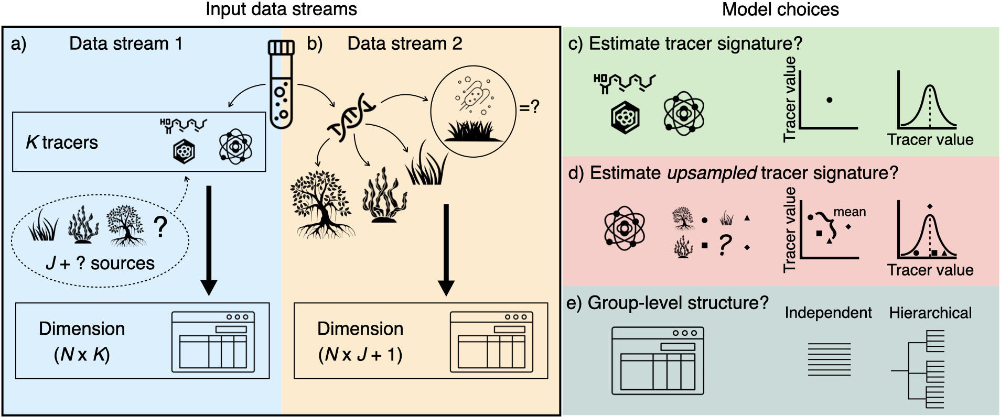

Overview
MixMustR is a flexible Bayesian mixture model package written in the probabilistic programming language Stan for R. It estimates source mixing proportions by incorporating simultaneous likelihood evaluation from two independent data streams collected from the mixture of interest (Fig. 1a–b): one obtained from chemical tracers/biomarkers (i.e., a single tracer measurement per observation, e.g., from stable isotopes and fatty acids), and another yielding source composition (e.g., based on eDNA). MixMustR also allows for the estimation of an additional, unsampled source component to partially relax the assumption that the mixing proportions from all samples sources should sum up to 1. MixMustR should have wide applicability in ecological studies, particularly given the growing usage and availability of multiple tracers spanning traditional stable isotopes and eDNA to understand carbon source-sink dynamics (Reef et al. 2018, Ortega et al. 2020, Queirós et al. 2019), and a mixture of stables isotope, fatty acids and eDNA to unravel trophic interactions (e.g., Nielsen et al. 2017, Hoenig et al. 2022).

Figure 1: MixMustR input data and framework. MixMustR relies on two independent data streams that are collected from the same N samples. a) the first stream (blue panel) is characterised by the canonical chemical tracer/biomarker (e.g., stable isotope, fatty acid) dataset, whereby a mixture measurement is obtained for every kth tracer and nth observation. The original sources of such mixtures are unknown, and based on domain knowledge researchers often assume that they come from J likely sources—here represented by hypothetical autotrophic carbon sources within the dashed bubble. However, there is a possibility that at least one additional source (the question mark) is not comprised in the J set of sources. b) The second stream (yellow panel) is yielded by community composition datasets which can be transformed to mixing proportions, such as those obtained via eDNA or metabarcoding techniques. This stream of information can reveal mixture sources beyond the original J sources considered by researchers, and MixMustR leverages that information by combining those additional sources into one single unsampled source, which would amount to the question mark in the first data stream. Given these data, the user can choose among eight model variants based on three choices (c—e, see below for more explanations).
The publication describing in full the statistical models in MixMustR can be found in an accompanying repository.
Model variants
MixMustR currently allows for eight model variants which result from three user-driven binary choices: 1) should the model only ingest the mean sampled-source tracer signatures (equivalent to “residual-only error” structure of the widely-used MixSIAR) or should it incorporate their uncertainty based on user-provided mean, variance and sample size information (equivalent to “process error” structure of MixSIAR, Fig. 1c); 2) should the unsampled-source tracer signatures be fixed at the mean across all sampled sources, or should they rather be estimated based on a prior informed by the mean and variance across the sampled tracer signatures? (Fig. 1d) and 3) should all observations be treated as independent or should the model include a hierarchical grouping structure? (Fig. 1e).
Synthetic datasets
MixMustR comes with two synthetic mixture datasets, synthetic_df_convergent and synthetic_df_divergent. Both are anchored to empirical values of stable isotopes and fatty acids for a range of plant carbon sources in marine soils. They are hierarchical in structure and simulate an unbalanced design (identical between both datasets) that would be typical of an ecological field sampling design. They differ in their discrepancy between the underlying mixing proportions between data streams 1 and 2, with synthetic_df_convergent exhibiting little difference, whereas synthetic_df_divergent exhibits larger difference:
library(MixMustR)
mus <- tracer_parameters$mus
compare_mixing_proportions(synthetic_df_divergent, synthetic_df_convergent, mus)
Although in real applications the user is unlikely to know the underlying mixing proportion of data stream 1, these synthetic datasets are useful to test the ability of the model variants (see above) to retrieve the underlying mixture proportions, and the package offers simple summary and visualisation functions for diagnostics.
Installation
The current development version can be downloaded from GitHub via
if (!requireNamespace("remotes")) {
install.packages("remotes")
}
remotes::install_github("open-aims/MixMustR", ref = "dev")Otherwise install the stable version via
if (!requireNamespace("remotes")) {
install.packages("remotes")
}
remotes::install_github("open-aims/MixMustR", ref = "main")Because MixMustR is based on Stan, a C++ compiler is required. See the prerequisites section on this link for further instructions on how to get the compilers running.
Usage
See package documentation and online vignettes for full explanation of expected structure of input variables, as well as how to decide on the measurement error/confidence for data stream 2.
library(MixMustR)
options(mc.cores = parallel::detectCores())
rstan::rstan_options(auto_write = TRUE)
# As an example, we pick mixmustr_models[6, ] because it runs quickest. It is
# non-hierarchical and does not estimate (un)sampled tracer signatures.
model_fits <- run_mixmustr_models(
mixmustr_models[6, ], synthetic_df_convergent, tracer_parameters,
sigma_ln_rho = 0.1, iter = 1e4, warmup = 5e3, chains = 4, cores = 4
)
# then visualise a particular output
make_post_prop_long(model_fits[[1]]$model, tracer_parameters$mus,
synthetic_df_convergent, target = "df_stream_2", n = 1) |>
plot_multiple_faceted_scatter_avg() +
theme(legend.position = "none") +
labs(y = "Observed (simulated) from eDNA (data stream 2)",
title = "Model fit performance mixing proportions",
subtitle = "Synthetic dataset of high agreement")Further Information
MixMustR is provided by the Australian Institute of Marine Science under the MIT License (MIT).